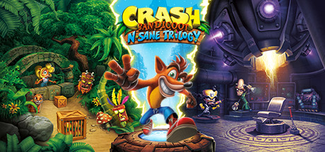

-

THE MOVIE
THE MOVIE
Toys for Bob, lo sviluppatore della serie Crash Bandicoot, sta lavorando su un nuovo titolo. Alla fine di febbraio, hanno annunciato di lasciare Activision Blizzard e Microsoft per continuare a lavorare con Microsoft come editore del loro prossimo gioco. Le speculazioni indicano che potrebbe trattarsi di un gioco legato a Crash Bandicoot, e un annuncio potrebbe arrivare a breve. Nel frattempo, sembra che ci sia anche interesse per un film di Crash Bandicoot, ma al momento non ci sono conferme ufficiali. Speriamo di saperne di più presto!
-

CRASH SU STEAM
CRASH SU STEAM
È arrivato il momento di scatenarsi su Steam! La N. Sane Trilogy è finalmente disponibile sulla piattaforma, portando con sé Crash Bandicoot, Crash Bandicoot 2: Cortex Strikes Back e Crash Bandicoot: Warped in tutto il loro splendore HD! Rivedi i tuoi momenti preferiti e affronta sfide platform intense come mai prima d'ora. Preparati a girare, saltare e schiacciare casse in un'avventura epica per salvare il mondo dai piani malvagi del Dr.Cortex!
-

CRASH BANDICOOT 4
CRASH BANDICOOT 4
Isole Wumpa in festa! Crash Bandicoot 4: It's About Time è ufficialmente DISPONIBILE! Rivivi l'iconica avventura del marsupiale piegando il tempo attraverso dimensioni strabilianti, padroneggia nuove abilità e affronta il diabolico Dr. Cortex e i suoi compari interdimensionali. Corri a prendere la tua copia oggi e preparati a un'avventura ricca di Wumpa! Corri a prendere la tua copia oggi e preparati a un'avventura ricca di Wumpa!